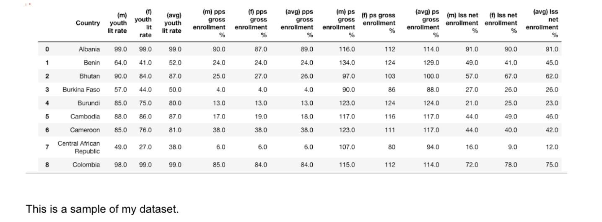
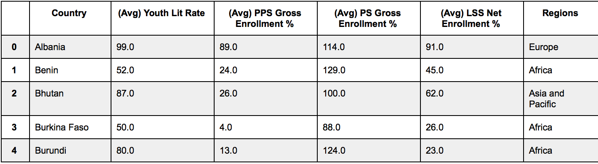
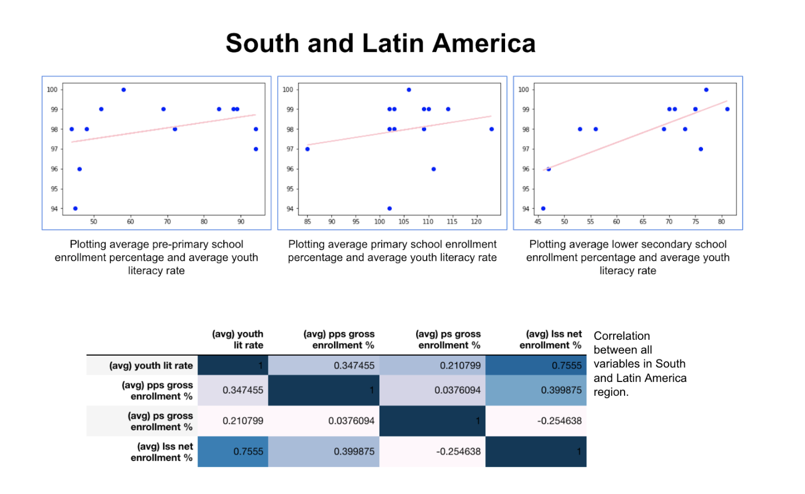
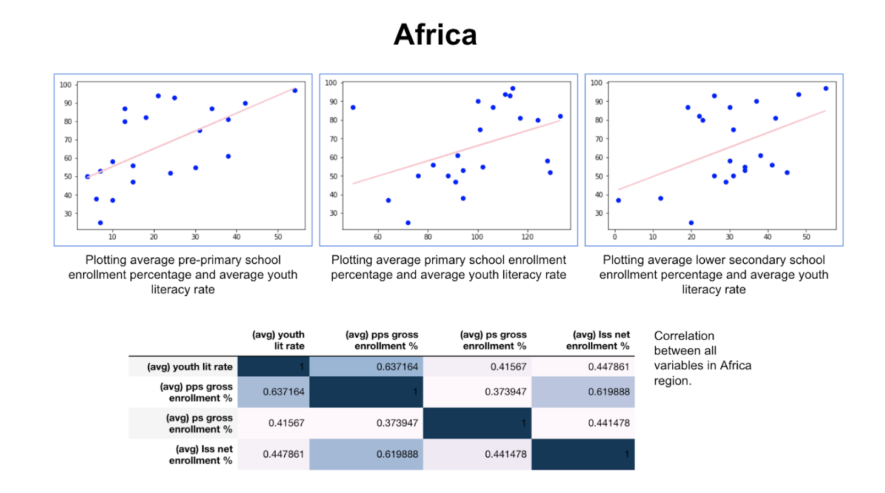

Quality access to education is essential for bright futures of the next generation of leaders around the world. Unfortunately, in reality, many countries are unable to provide children with the education that they rightfully deserve, thus causing these countries to fail to make use of these childrenʼs potentials and fall behind in terms of development. My goal was to analyze enrollment rates in different levels of schooling around the world and how they were associated with the youth literacy rates. The purpose in doing so was to eventually determine an increase in which level of education early on in a childʼs life resulted in the highest increase in youth literacy rate.
Upon searching for datasets relating to childrenʼs education, I found a dataset from UNICEF on different demographic factors and how they are related to measures of life quality in countries around the world. I discovered that this dataset had data on pre-primary school, primary school, and lower secondary school attendance rates, so I chose to continue my study with it because Iʼd be able to explore how different levels of schooling affected the youth literacy rate.
My dataset initially includes a list of countries in the world. Each row for a country contains data on the percentage of the youth population in that country that was enrolled in pre-primary school, primary school, and lower secondary school, as well as each of the youth literacy rates.
Each category of data is also separated by gender, although for the purposes of this project I decided to focus only on the overall trends in the data. I manually added a column for the region of the world that the country is in– sourcing my information from the International Telecommunications Union– as one of my goals was to analyze whether trends in data were common throughout regions.
I began my research by manually eliminating countries where there were data points missing. Although this indeed eliminated a lot of countries in the dataset, which would prove to make regional analysis somewhat difficult later on, I wanted to only consider countries where I had the full statistics about all three types of schooling and the youth literacy rate on. I then cleaned my data further using pandas, including eliminating columns with extraneous data and organizing my data for ease of viewing and analysis. I made separate datasets for each region by filtering the data in my table for each region name. My original dataset did contain data for each category for both sexes for each country, but I decided to simplify my data by only looking at the averages for each statistic instead of data for both males and females. To do this, I calculated the average value between the corresponding male and female data points for each country and category of education and dropped the two initial columns to condense my data. In the future, Iʼd like to explore further trends in my data by gender, but I decided that the average for each category was enough for a preliminary analysis and to draw overall conclusions about my data.
This is a section of the final dataset that I used.
To find correlations and trends within my data, I decided to observe what correlation existed between the three different types of schooling and the youth literacy rates by finding the correlation coefficients between each variable (the enrollment rates for the three different types of schooling and the youth literacy rate) within each region-specific table. Although my goal was to specifically determine how each type of schooling affected the literacy rate, I decided to complete this step in order to get an overall understanding of the variables I was working with.
Next, I plotted each of the columns for the types of education against the youth literacy rate in a scatterplot– one for each region. I used a linear regression model to calculate regression lines for each scatterplot, which allowed me to determine which type of schooling was associated with the highest increase in literacy rate (per percent increase of students enrolled in each type of school).
As expected, There does seem to be an overall increase in youth literacy rate with all types of schooling studied in this research project. In four out of five regions, the lower secondary school enrollment rate was most strongly correlated with an increase in youth literacy rate, as determined by the values of the correlation coefficients calculated for each relationship.
However, I ran into some problems during data analysis that need to be addressed prior to drawing further conclusions from the data. To begin with, my dataset is only a fraction of the original dataset published by UNICEF, since I eliminated countries that had incomplete data. Furthermore, when I split my data into five regions of the world, a few regions did not have enough data to produce conclusive results. For example, doing the above two steps eliminated all but five countries in the Arab States region.
While my data demonstrated a positive association between an increase in pre-primary school / lower secondary school enrollment and youth literacy rate, the sparseness of my data for that region meant I was unable to draw any conclusions. With those issues taken into consideration, I ended up with the most conclusive data for the regions South/Latin America and Africa.
South and Latin America was one of the four regions where the highest correlation between schooling and literacy was seen with lower secondary school enrollment (in this case, the correlation coefficient r was 0.755, signifying medium to high correlation). In the rightmost plot, associating enrollment percentage for lower secondary school and average youth literacy rate, the slope of the regression line was approximately 0.1. This means that with every one percent increase in lower secondary school enrollment, there is a predicted 0.1 percent increase in youth literacy rate. While this seems quite low, it proves that there is in fact some sort of correlation between the two variables.
For the purposes of this project, I focused on finding a linear model for each graph. However, it is quite possible that a different model might fit better. This is especially evident in the plot for pre-primary school enrollment against youth literacy rate in the South and Latin America region; the scatterplot seems to suggest a nonlinear pattern in the data. A possible reason why the data could follow this pattern is that initially, as school enrollment increases, a significant increase in youth literacy rate is observed; however as we continue observing the data, we notice a likely trend of “diminishing returns”. After a point, perhaps increasing schooling enrollment very minutely affects literacy rate. These trends outside of linear association are definitely a point for future work on this data analysis project.
Similar trends were seen in the data for Africa region. Itʼs worth noting that the highest slope of the regression line observed in all of my data was for the lower secondary school enrollment rate in Africa. This means that on average, a one percent increase in lower secondary school enrollment rate was associated with the highest increase in literacy rate out of all the data. Some research indicates that this could be because in developing countries, a small increase in a factor that helps the country develop (such as educating the youth) has much higher payoff than in a more developed country. This could be why the same increase in enrollment percentages around the world resulted in the highest increases in youth literacy rates in still-developing countries, while it was significantly less of a benefit in more developed countries such as in Europe.
One may notice the outlier in the top left corner of the middle plot– average primary school enrollment rate against youth literacy rate. It seems that even with a very low primary school enrollment rate that year, it had a quite high relative youth literacy rate. I decided that this point was worth investigating, so I found out what country the point corresponded with: Eritrea. Upon doing some research, I realized that Eritrea has a relatively higher enrollment rate for the other two types of schooling, as well as in tertiary school which I did not consider for most of this project. This leads us to the conclusion that only looking at one plot isnʼt enough to classify a country as a complete outlier, because in the case of Eritrea, the primary school plot just wasnʼt representative of its overall enrollment in education. A future goal can be to analyze whether there are certain countries that show up as outliers in all the graphs, and investigate why that might be.
From performing exploratory data analysis, I concluded that for the majority of my data, the lower secondary school enrollment rate was most associated with the average youth literacy rate. Analyzing my data led to some noteworthy observations, including: a) the possibility of a nonlinear model fitting the data better than the linear models I created, b) the presence and cause of outliers, and c) realistic reasons why some areas of the world demonstrated a higher increase in literacy rate in response to an increase in education enrollment than others. Future work on this project will aim to explore these observations in greater depth, as well as gain a greater understanding of how analyzing this data can help us in the perspective of finding the best way we should educate todayʼs youth around the world.
UNICEF. (2016). 2016 Data on Education. Retrieved from https://data.unicef.org/topic/education/